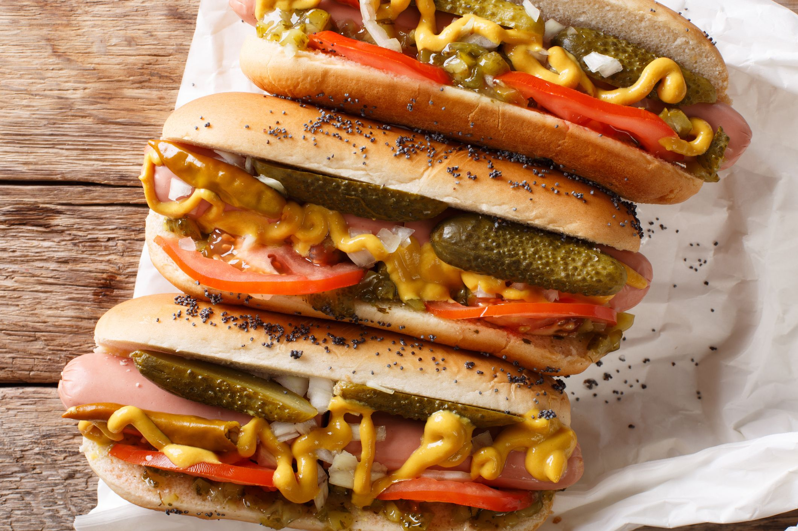

HOTDOG

INGREDIENTS
- 1 hot dog
- 1 hot dog bun
- Ketchup, mustard, relish, onions, or sauerkraut for toppings
INSTRUCTIONS
- Preheat a grill or grill pan over medium-high heat.
- Score the hot dog with a few diagonal cuts.
- Grill the hot dog for 5-7 minutes, turning occasionally, until heated through and lightly charred.
- Toast the hot dog bun on the grill for about 1 minute, or until lightly browned.
- Assemble the hot dog by placing the cooked hot dog in the bun and adding condiments of your choice, such as ketchup, mustard, relish, onions, or sauerkraut.